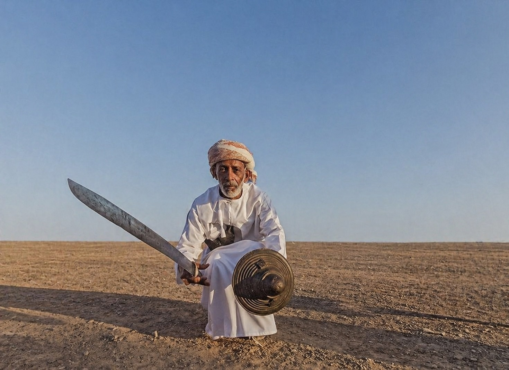

مقال سارا سلطان خارطة الصّناعات الثّقافيّة والإبداعيّة وعَلاقتها برؤيَة عُمان 2040
كيف تتكامل خارطة الصّناعات الثّقافيّة والإبداعيّة مع رؤيَة عُمان 2040؟
لم يعُد الحديث عن الثّقافة في ظلّ التّوجّهات التّنمويّة الحديثة مُقتصرًا على حِفظ التّراث أو صَون الهُويّة؛ إذ اِتّجه نحو إعادة تموضعها كموردٍ حيويّ قائمٍ على الإبداع والمعرِفة، ويعمل ضمن منظومة إنتاجٍ تُسهم في تشكيل قيمةٍ اِقتصاديّةٍ – ثّقافيّةٍ – اِجتماعيّةٍ يُمكن قياسها واِستثمارها واِستمرارها.
وتجسيدًا لهذا التّوجّه، تأتي خارطة الصّناعات الثّقافيّة والإبداعيّة في السّلطنة كخطوةٍ اِستراتيجيّة لا تكتفي برصد القطاع الثّقافيّ والإبداعيّ، بل تُمهّد لتأطير العَلاقة بين الإبداع والاِقتصاد والمُجتمع؛ من تقديراتٍ عامّة إلى بياناتٍ دقيقة، ومن أنشطةٍ متفرِّقة إلى منظومةٍ مُنظَّمة.
وعلى الصّعيد العالميّ، تُشير تقارير الأونكتاد (2024) إلى أنّ مُساهمة الاِقتصاد الإبداعيّ تختلف باِختلاف الدّول، حيثُ تتراوح بين 0.5% – 7.3% من النّاتج المحلّيّ الإجماليّ، فيما تُقدّر تقارير اليونسكو (2022) قُدرة الصّناعات الثّقافيّة والإبداعيّة على توفير 30 مليون وظيفة عالميًّا.
وتُشيرُ تلك المؤشّرات إلى أنّ الإبداع لم يعُد نشاطًا هامشيًّا، بل رافدًا حيويًّا يضعُ التّجرِبة العُمانيّة أمام مرحلةٍ مفصليّةٍ؛ نستقرئُ من خلالها دورَ الخارطة كمُمكّنٍ اِستراتيجيّ يُعيد تموضع المُبدع كشريكٍ إنتاجيّ، بما يضمنُ مواءمة الحِراك الثّقافيّ والإبداعيّ مع المُستهدفات الوطنيّة.
فماذا يعني أن تمتلك السّلطنة هذه الخارطة؟ وما دلالاتها المُباشرة على المُبدع العُمانيّ؟ وكيف يُمكن تحويل مُخرجاتها إلى قراراتٍ اِستثماريّة تتكامل مع رؤيَة عُمان 2040؟
خارطة الصّناعات الثّقافيّة والإبداعيّة: من القيمة الرّمزيّة إلى القيمة الاِقتصاديّة

إنّ الإجابةَ عن هذه التّساؤلات تبدأ من فهمنا للخارطة باِعتبارها مُحرّكًا للتّغيير، لا مُجرّد راصدٍ إحصائيّ؛ إذ تُسهم في قيادة تحولٍ مفصليّ في العقليّة الاِقتصاديّة يَنقلُ الثّقافة من مجالٍ رمزيّ يرتبط بالهُويّة والتّراث، إلى قطاعٍ اِقتصاديّ مُنظّمٍ قادرٍ على إيجاد فُرصٍ اِستثماريّةٍ مُستدامة. وهو ما يستجيب لمُقاربة اليونسكو الّتي تنظُر إلى الإبداع كقيمةٍ مُضافةٍ في سلاسل التّوريد الاِقتصاديّة العالميّة.
وفي الإطار الوطنيّ، تُعدّ الخارطة إحدى الأدوات المِحوريّة الدّاعمة لسياسات التّنويع الاِقتصاديّ، وتتضاعفُ أهمّيّتها مع اِرتفاع مُساهمة القطاعات غير النّفطيّة إلى نحو 72.5% من النّاتج المحلّيّ الإجماليّ وفق أحدث التّقارير الماليّة لعام (2024)، داعمةً حضور الصّناعات الثّقافيّة والإبداعيّة ضمن سياقات الاِقتصاد غير النّفطيّ.
كما تعمل الخارطة على تحليل المجالات الثّقافيّة والإبداعيّة وسلاسل قيمتها، لتُعيدَ ترتيب مُستويّات نُضجها؛ فمنها ما هو عريقٌ وراسخٌ كالحِرف التّقليديّة، والفنون البصريّة والمسرحيّة والشّعبيّة، ومنها ما هو واعدٌ وناشئٌ كصِناعة المُحتوى الرّقميّ، التّصميم الجرافيكيّ، والألعاب والرّياضات الاِلكترونيّة.
ويُمكن مُلاحظة حيويّة هذه المجالات في الأسواق التّقليديّة؛ حيث تتحوّل المعالم الحضاريّة إلى قوىً تجاريّةٍ تدمجُ الجدوى الاِقتصاديّة بالأصالة التّاريخيّة مثل: "سوق مطرح" بمُحافظة مسقط، و"سوق الرّستاق" بمُحافظة جنوب الباطنة كموروثاتٍ شعبيّة.
بالإضافةِ إلى التّجارِب السّياحيّة الّتي تستثمرُ الهُويّة المكانيّة ضمن تجربةٍ اِقتصاديّةٍ مُتكاملة مثل: "موسم الرّمان" بمُحافظة الدّاخليّة كموروثٍ زراعيّ، و"موسم الصّرب" بمُحافظة ظَفار كموروثٍ بيئيّ.
وتسبقُ هذه الحيويّة الثّقافيّة في عُمان أُطر القياس الاِعتياديّة، مُشكّلةً بذلك واقعًا إبداعيًّا يتعدّى حدود المؤشّرات الرّقميّة والإحصاءات المعياريّة.
لماذا يُعدّ غياب الرّقم أهمّ رقم في الاِقتصاد الإبداعيّ العُمانيّ؟
قد يُفهم غياب رقمٍ دقيق يَقيس مُساهمة الصّناعات الثّقافيّة والإبداعيّة في النّاتج المحلّيّ الإجماليّ كفجوةٍ إحصائيّة، غير أنّه يدلّ في مضمونه على مرحلةٍ اِنتقاليّةٍ حاسمةٍ يتحرّك فيها القطاع بين حضورٍ ميدانيّ مُتنامٍ، وغيابٍ للرّصد الإحصائيّ الرّسميّ الّذي يُؤطره ضمن حساباتٍ وطنيّةٍ مُستقلّة.
فالمؤشّرات غير المُباشرة تؤكّد وجود تدفّقٍ ثقافيّ وإبداعيّ في مجالاتٍ رياديّة كتصميم الأزياء، وتنظيم المهرجانات، وتأسيس المنصّات الرّقميّة؛ الّتي تفرضُ حضورها اليوم دون أن تُصنّف إحصائيًّا باِعتبارها مجالاتٍ لقطاعٍ قائمٍ بذاته.
ويُمكن قراءة هذا التّدفّق الثّقافيّ والإبداعيّ كبوادر اِقتصادٍ إبداعيّ غير مرئيّ، ينمو خارج الأُطر التّقليديّة للرّصد؛ وهو ما يضعُ الخارطة في موضع المُمكّن لدمج القطاع في سياقات الاِقتصاد الوطنيّ، عبر ما تستدعيه من أطرٍ تشريعيّة، وآليّاتٍ تمويليّة، وبُنىً داعمة.
كيف تُعيدُ الخارطة تموضع المُبدعين ضمن رؤيَة عُمان 2040؟
لا يقتصرُ دور الخارطة على حدود رعايَة المُبدع، بل تمتدّ لإشراكه كفاعلٍ رئيسٍ في اِستثمار مُخرجاتها؛ مُعيدةً تموضعه ضمن منظومةٍ تتكامل فيها أدوار السّياسات الدّاعمة، والبرامج التّأهيليّة، والأدوات التّمويليّة فتُدارُ وفق نموذجٍ اِقتصاديّ يتّسمُ بمرونة التّشغيل، ويضمنُ ديمومة الأثر، ويُعزّزُ تنافسيّة الإبداع العُمانيّ على خارطة الإبداع العالميّة.
مُشكّلةً بذلك وعي المُبدع بذاته المِهنيّة؛ إذ لم يعُد مُجرّد مُستفيدٍ من السّياسات، بل مُحرّكًا أساسيًّا لتفعيلها، دافعةً به من نطاق النّشاط غير الرّبحيّ (الهِوايّة) إلى آفاق الاِستثمار الإبداعيّ (الاِحتراف)؛ مُؤكّدةً مكانتهُ كشريكٍ أصيلٍ في سلسلةٍ مُتكاملةٍ تُنتِج القيمة الاِقتصاديّة عبر مراحلها المُختلفة، بدءً من التّمويل، مرورًا بالإنتاج والتّسويق، وصولًا إلى التّوزيع والبيع، واِنتهاءً بالمُستهلك الّذي يُعيد صياغة القيمة وتداولها، بما يجعل الخارطة ركيزةً توجيهيّةً لنهجٍ إبداعيّ مُستدام، يتوافقُ مع المُبادرات الوطنيّة لرؤيَة عُمان 2040.
وفي مُقاربةٍ تشخيصيّة، تُشخّص الخارطة: متطلّبات التّمويل اللّازمة لتحويل الأفكار إلى أصولٍ اِستثماريّة، ومسارات التّوزيع الكفيلة بإيصال المُنتَج إلى الأسواق المحلّيّة والدّوليّة، وفجوات البُنيَة التّحتيّة الرّقميّة والتّشريعيّة الّتي تضمنُ اِستدامةَ الحِراك الثّقافيّ والإبداعيّ؛ لتُشكّل بذلك مرجعيّةً تحليليّةً تدعم المُحرّكات الفاعلة لإيجاد منهجيّات دعمٍ مُمنهجة.
ويتجسّد هذا الدّور عمليًّا من خلال التّكامل الاِستراتيجيّ مع هيئة تنميَة المؤسّسات الصّغيرة والمتوسّطة (ريادة) في الإشراف على "حاضنة الصّناعات الإبداعيّة" بالشّراكة مع مركز الشّباب، والّتي تُعنى بتحويل الأفكار الرّياديّة والمشاريع النّاشئة إلى كياناتٍ اِقتصاديّة ذات قيمةٍ محلّيّة مُضافة، يُعزّزها منهجٌ أكاديميّ مُعتمد تؤسّسه "كلّيّة الصّناعات الإبداعيّة" لربط الموهبة الإبداعيّة بمعايير الأداء المِهنيّ، بالتّوازي مع المُقرّرات الدّراسيّة لـ "الكلّيّة العلميّة للتّصميم"، والبرامج التّدريبيّة لـ "أكاديميّة الصّناعات الإبداعيّة" في تكامُلٍ يرفد القطاع الثّقافيّ والإبداعيّ بكفاءاتٍ وطنيّةٍ مؤهّلةٍ تُلبّي اِحتياجات سوق العمل العُمانيّ.
ما عَلاقة الخارطة برؤيَة عُمان 2040؟
تتلاقى الخارطة مع محاور رؤيَة عُمان 2040 في نُقطة اِرتكازٍ تجمعُ بين البُعدين: الثّقافيّ المُرتبط بالهُويّة والمُجتمع، والاِقتصاديّ المُرتبط بالتّنويع والنّموّ؛ في مواءمةٍ اِستراتيجيّةٍ مع مُستهدفات الرّويَة الّتي تمضي إلى بناء اِقتصادٍ متنوّعٍ ومُستدامٍ قائمٍ على المعرِفة والاِبتكار؛ مُعزّزًا بذلك المساعي الوطنيّة لرفع مُساهمة المؤسّسات الصّغيرة والمتوسّطة إلى نحو 30% – 35% من النّاتج المحلّيّ الإجماليّ، وهو مستهدفٌ يستندُ في أساسه إلى تمكين الاِبتكار، وتحويل الأفكار إلى مشاريعَ رقميّةٍ تُسهمُ في وصول الاِقتصاد الرّقميّ إلى 10% بحلول عام 2040؛ بما يُؤكّدُ أهليّة القطاع كركيزةٍ تنمويّةٍ – اِقتصاديّةٍ متى ما حوكمت مُمكّناته.
وتُقدّمُ التّجرِبة السّياحيّة المُرتبطة بالهُويّة المكانيّة لـ "خريف ظَفار" نموذجًا حيًّا للنّضج المؤسّسيّ؛ إذ لم تعُد تجرِبةً موسميّةً مؤقّتة، بل نشاطًا مُنظّمًا تُقاسُ مُخرجاته، وتتنامى عوائده عامًا بعد عام.
ومع تجاوز حاجز المليون زائر، اِرتفع إجماليّ الإنفاق السّياحيّ مُسجّلًا معدل نموٍ اِستثنائيًّا؛ إذ تجاوزَ 100 مليون ريال عُمانيّ خلال عامي (2024 – 2025)، بما يدلّ على تحوّل التّجرِبة السّياحيّة إلى منظومةٍ اِقتصاديّةٍ مُنتِجةٍ للقيمة المحلّيّة المُضافة؛ بدءً من لحظة الإنفاق المُباشر للزّائر، وصولًا إلى رفد سلاسل التّوريد المحلّيّة؛ مُجسدةً بذلك الإمكانات الكامنة للصّناعات الثّقافيّة والإبداعيّة في دعم الأولويّات الوطنيّة عندما تُدار ضمن أُطرٍ مؤسّسيّةٍ شاملة، وهو ما تُؤطّره الخارطة كأداةٍ اِستراتيجيّةٍ تعملُ على توحيد الأنشطة المُتفرّقة ضمن سلاسل قيمةٍ مُترابطة، تخدمُ توجّهات التّنويع الاِقتصاديّ لسلطنة عُمان.
من الخارطة إلى الرّؤيَة: نحو أفقٍ إبداعيّ مُستدام
في عَلاقةٍ لا تسير في اِتّجاهٍ واحد، بل في مسارٍ تبادليّ: تُقدّمُ الخارطة نفسها كمِعبرٍ حيويّ يَعبرُ بالمُبدع نحو المنظومة الوطنيّة الشّاملة الّتي تُمثّلها رؤيَة عُمان 2040؛ مُرسّخةً الإبداعَ كهُويّةٍ اِقتصاديّةٍ مُستدامة، مُبتدؤها الأصلُ الإبداعيّ ومُنتهاها الكيانُ المؤسّسيّ الّذي يستوعبها، ويؤطرها ضمن منظومةٍ إنتاجيّةٍ مُتكاملة.
وبقدرِ ما تُضفي الخارطة شرعيّةً اِقتصاديّةً لنا كمُبدعين عُمانيين، فهي تضعنا أيضًا أمام مسؤوليّة وطنيّة: فكيف لنا أن نصونَ اِستدامة الهُويّة العُمانيّة في ظلّ التّنافسيّة الثّقافيّة العالميّة، وكيف لنا أن ندفعَ باِتّجاه نموذجٍ تتماهى فيه أصالة الموروث العُمانيّ مع ديناميكيّة الاِقتصاد المُعاصر؟